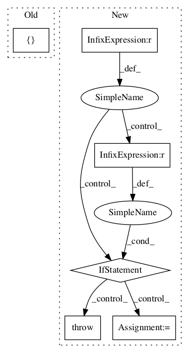

534c4dc7423681faab78d1829c1ec3c31ffb8330,niftynet/layer/resampler.py,ResamplerLayer,_resample_inv_dst_weighting,#ResamplerLayer#Any#Any#,319
Before Change
samples = [tf.gather_nd(img, knot)
for (img, knot) in zip(batch_inputs, batch_knots)]
else:
samples = []
for img in batch_inputs:
for knot in batch_knots:
samples.append(tf.gather_nd(img, knot))
samples = tf.stack(samples, axis=1)After Change
// get values of N neighbours
batch_inputs = tf.unstack(inputs, axis=0)
batch_knots = tf.unstack(knots_id, axis=1)
if batch_size == n_coor ds:
samples = [tf.gather_nd(img, knot)
for (img, knot) in zip(batch_inputs, batch_knots)]
elif n_coords == 1 and batch_size > 1:
samples = [tf.gather_nd(img, batch_knots[0])
for img in batch_inputs]
else:
raise NotImplementedError
samples = tf.stack(samples, axis=1)
// weighted average over N neighbours
return tf.reduce_sum(
samples * tf.expand_dims(point_weights, axis=-1), axis=0)In pattern: SUPERPATTERN
Frequency: 3
Non-data size: 6
Instances Project Name: NifTK/NiftyNet
Commit Name: 534c4dc7423681faab78d1829c1ec3c31ffb8330
Time:
Author: null
File Name: niftynet/layer/resampler.py
Class Name: ResamplerLayer
Method Name: _resample_inv_dst_weighting
Project Name: openai/baselines
Commit Name: b71152eea0470ac2629c33e0fc66a54fe494949f
Time:
Author: null
File Name: baselines/a2c/utils.py
Class Name:
Method Name: conv
Project Name: tensorflow/lattice
Commit Name: 04a318d89806e0aaa645c2e261dfd93d0ed200bc
Time:
Author: null
File Name: tensorflow_lattice/python/premade_lib.py
Class Name:
Method Name: build_rtl_layer